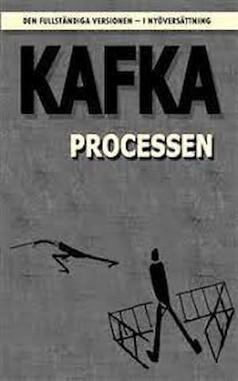
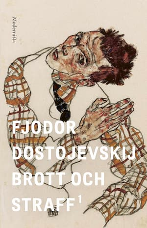

Brott och straff ännu ett mästerverk från Dostojevskij. En bok där du får
följa med en fattig student som mördar en pantlånerska och hans konflikt med sitt samvete

Franz Kafka Processen
Brott och straff ännu ett mästerverk från Dostojevskij. En bok där du får
följa med en fattig student som mördar en pantlånerska och hans konflikt med sitt samvete
Fjodor Dostojevskij Brott och Straff
Brott och straff ännu ett mästerverk från Dostojevskij. En bok där du får
följa med en fattig student som mördar en pantlånerska och hans konflikt med sitt samvete

Fjodor Dostojevskij Idioten
Idioten var boken som fick mig att bli förälskad i Dostojevskij. Boken betyder
väldigt mycket för mig
och är fortfarande den bästa boken jag någonsin läst.